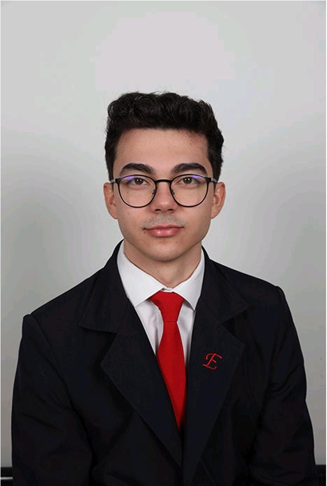

Șuteu Iulian - Andrei
iuliansuteu1@gmail.com
"Scopul educației este să înlocuiască o minte goală cu una deschisă." — Malcolm Forbes
| Discipline | Link aferent disciplinelor |
|---|---|
| Programarea Calculatoarelor și Limbaje de Programare (anul I) | https://etti.utcluj.ro/files/Acasa/Site/FiseDisciplina/EaRo/04b.pdf |
| Circuite și Componente Pasive (anul I) | https://etti.utcluj.ro/files/Acasa/Site/FiseDisciplina/EaRo/05b.pdf |
| Grafică Asistată de Calculator (anul II) | https://etti.utcluj.ro/files/Acasa/Site/FiseDisciplina/EaRo/15.pdf |
| Microcontrolere (anul III) | https://etti.utcluj.ro/files/Acasa/Site/FiseDisciplina/EaRo/41.pdf |
| Instrumentație Virtuală (anul IV) | https://etti.utcluj.ro/files/Acasa/Site/FiseDisciplina/EaRo/48.pdf |
Fotografia, Înotul, Ascult muzică
